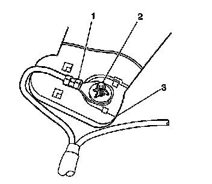
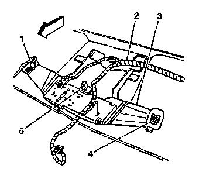

Sunshade Retainer Bezel Replacement
Sunshade Retainer Bezel Replacement
Removal Procedure
1. Remove the windshield pillar garnish moldings. Refer to Windshield Pillar Garnish Molding Replacement (Service and Repair) .
2. Detach the sunshades from the sunshade rod retainers.
3. Carefully pry open the sunshade rod retainer cover using a thin flat-bladed tool.

Important: The right side sunshade retainer bezel fastener (2) secures the ground strap (1) for the coaxial cable and the overhead console bracket (3) above the headliner.
4. Ensure to include the ground strap upon re-assembly of the sunshade rod retainer, right side only.
5. Remove the fasteners.
6. Lower the front part of the headliner in order to access the ground strap (1).
7. Remove the right side sunshade bezel from the headliner.
8. Remove the left side sunshade bezel from the headliner.
Installation Procedure

1. Position the bezel to the bottom side of the headliner.
2. Press the bezel upward into place.
3. Position the overhead console bracket (3) to the sunshade rod retainer.
4. Insert the bolt (1) through overhead console bracket (3) and the ground strap.
5. Install the serrated washer in order to hold the bolt in place prior to installation.
Notice: Refer to Fastener Notice (Fastener Notice) .
6. Position the bolt to the roof panel.
Tighten the right side sunshade rod retainer bolt (1) to 10 N.m (89 lb in).
7. Install the left side sunshade rod retainer fastener (4).
Tighten the fastener to 2 N.m (18 lb in).
8. Position both the sunshades to the sunshade rod retainers.